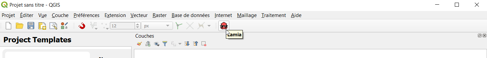
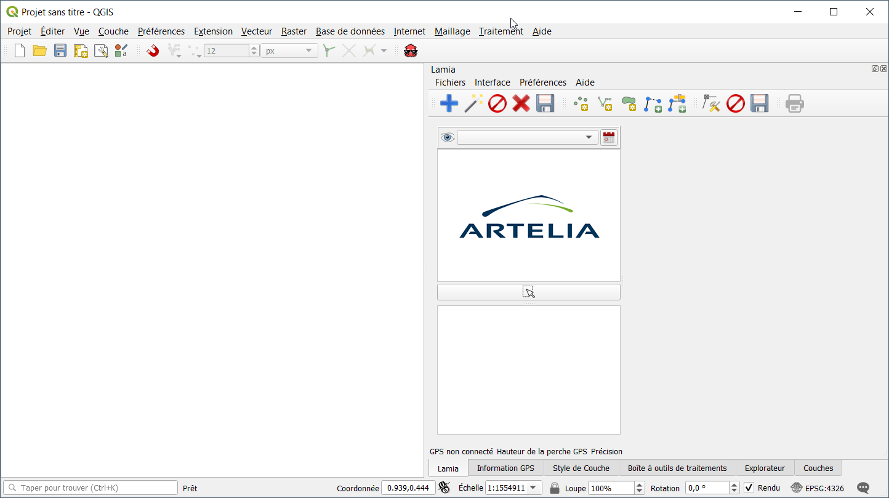
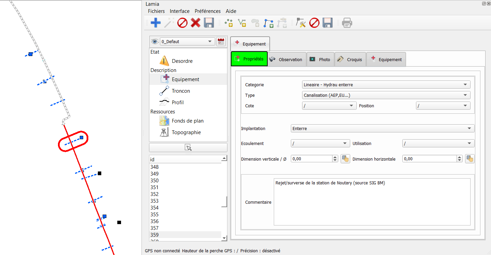
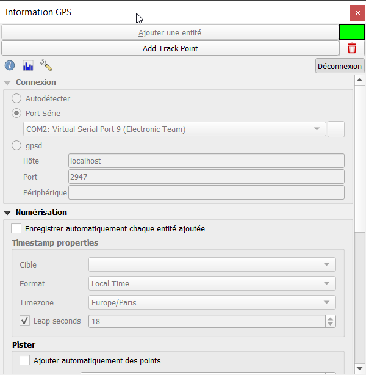

Prise en main rapide¶
Cette partie contient le minimum à savoir avant d’utiliser Lamia. Il est fortement conseillé de lire ce paragraphe.
Créer sa première base de données¶
Au lancement de Qgis, la première étape est donc de démarrer LAMIA en cliquant sur l’icône du plugin.
Un nouveau panneau va s’ouvrir sur la droite de l’écran, qui contiendra le plugin.
Vous êtes ensuite prêt à créer votre première base de données. Pour cela, rendez-vous dans le menu FICHIERS/NOUVELLE BASE de LAMIA.
Une nouvelle boite de dialogue apparait alors.
Ici, sélectionnez :
le type de base de données
(par défaut, choisissez une base en spatialite, qui sera créée en local sur votre poste ou votre tablette)
le type de données à rentrer dans la base.
Il s’agit du métier pour lequel vous voulez constituer une base de données. Les possibilités sont :
les réseaux d’eau potable (choisir base3_waterdistribution)
les réseaux d’assainissement (choisir base3_urbandrainage)
les digues (choisir base3_levee)
les relevés faune/flore (choisir base3_faunaflora)
le suivi de chantier (choisir base3_constructionsite)
La variante du métier à utiliser
Une variante consiste en une interface adaptée à un besoin métier particulier ou à des exigeances clients particulières. Par defaut choisir Lamia.
Choix du système de coordonnées.
LAMIA vous demande alors de lui préciser le système de coordonnées qu’elle doit utiliser.
Nous vous conseillons d’utiliser un système de coordonnées classique. Dans le cas contraire, Qgis peut ne pas réussir à définir proprement les géométries et ne pas être capable de récupérer les informations que vous allez rentrer. Le Lambert 93 ici utilisé est une référence fiable (EPSG :2154)
Choix de l’espace de stockage
En spatialite, la boite de dialogue suivante vous demandera de choisir un emplacement où créer la base de données ainsi qu’un nom pour la base.
En Postgis, LAMIA vous demander les à la place les informations de connexion de la base avec laquelle elle doit travailler. Il faudra donc au préalable avoir construit ladite base (par exemple à travers l’interface pgadmin) et y avoir bien ajouté l’extension PostGIS.
LAMIA va alors construire la base de données. Cette étape peut prendre un peu de temps.
Par la suite, pour rouvrir la même base, vous pourrez utiliser le menu FICHIERS/CHARGER BASE et sélectionner la base spatialite précédemment créée ou renseigner les identifiants de la base PostGIS pour reprendre votre travail.
Découverte de l’interface¶
Cette interface peut se décomposer en plusieurs parties :

Cartographie QGIS
Ce cadre contient l’ensemble des informations géographiques et l’interface SIG classique. Vous pouvez y traiter vos couches Qgis comme dans n’importe quel SIG et y placer directement vos géométries LAMIA par simple clic.
Module LAMIA
Le panneau du plugin LAMIA qui contient l’interface de saisie de données et de consultation des informations de la base.
Menu des objets principaux disponibles
Cette liste vous permet d’accéder aux différentes catégories d’objets disponibles dans votre base. Vous accédez ainsi aux différents types d’éléments pour consulter ceux déjà existants et en créer de nouveaux.
Liste des objets existants
Une fois un objet sélectionnée, vous trouvez ici la liste des objets déjà existants dans la base. Sélectionnez-en un ici pour consulter les informations de cet objet.
Détails de l’objet, interface de saisie de données
Ce panneau affiche les informations sur les objets contenus dans la base. L’affichage dépend de la catégorie et s’adapte à chaque type d’objets pour détailler les différents paramètres. Vous pouvez initialiser ici les paramètres des objets que vous créez, consulter les données déjà existantes et les éditer.
Bouton de selection géographique
Ce bouton permet de selectionner depuis l’espace cartographique QGis (1) un objet du type selectionné dans la liste des objets principaux (3)
Point important à bien comprendre
Un système d’onglet permet de naviguer entre les propriétés principales de l’objet et ses éléments enfant (ces éléments sont liés par un système de clés étrangères au sein de la base de données)
Dans l’exemple ci dessus, nous avons selectionné un équipement (en cliquant d’abord sur l’onglet Equipement dans le panneau 3, puis en selectionnant un objet avec le bouton 6). Dans le formulaire (espace 5), les propriétés de cet objet apparaissent. Aussi, l’objet selectionné est entouré de rouge dans l’espace cartographique (1)
Nous observons que d’autres onglets se situent à droite de l’onglet « Propriétés » : ce sont les tables liées à l’objet en cours de selection. Dans l’exemple ci-dessus, nous pouvons ainsi associer des observations, photos, croquis ou autre sous equipement à l’équipement selectionné.
Ainsi, si nous selectionnons l’onglet « Equipement » à droite de l’onglet « Propriétés », nous accedons aux équipements liés à l’équipement principal préalalement selectionné. Cet élément « enfant » apparait entouré de bleu dans l’espace cartographique (1).

Une nouvelle ligne apparaît dans les onglets, avec la même logique que la ligne supérieure : les propriétés de l’objet apparaissent dans l’onglet « Propriétés » et les tables enfants de cet objet apparaissent à droite de l’onglet « Propriétés ».
Ce principe deviendra plus clair avec la partie suivante où nous allons créer nos premiers objets Lamia.
C’est parti : première saisie¶
La logique générale est toujours la même, et est expliquée ici.
Note
Il faudra toujours :
CRÉER
SAISIR LA GÉOMÉTRIE ET RENSEIGNER LA FICHE
ENREGISTRER
Le fait d’enregistrer à chaque changement est un choix fait qui permet d’assurer au final la qualité de la donnée dans la base de données.
Tout d’abord, on choisit le type d’élément à renseigner, p.ex ici un équipement
Ensuite on va créer un nouvel élément. Pour cela, dans la barre d’outil cliquer sur le « + » bleu :

un formulaire vierge apparaît, avec l”onglet en rouge pour signaler qu’il s’agit d’un nouvel enregistrement.
Naviguer dans le formulaire et renseigner les champs voulus.
Indiquer la localisation géographique de l’objet.

Pour cela, dans la barre d’outil présentée ci-dessus, cliquer sur le type de géometrie voulue (point, ligne ou polygon et saisir l’objet dans l’espace cartographique de qgis)
Note
Avec un ordinateur, la fin de la saisie se fait avec le click droit de la souris. Sur une tablette, la fin de la saisie se fait souvent avec un click long du stylet.
Enregistrer la formulaire

Suite à l’enregistrement, l”onglet devient vert : l’objet est bien enregistréé.
Un champ est changé dans le formulaire
Si vous changez un champ de le formulaire, l”onglet devient bleu : il faut alors annuler le changement ou l’enregistrer pour que l’onglet redevienne vert.
Recommencer la manipulation avec un table enfant.
Maintenant qu’un élément principal est créé, vous pouvez recommencer la manipulation en cliquant sur un onglet à droite de l’onglet « Propriétés ». Vous créerez alors un objet lié et uniquement lié à l’objet parent que l’on a saisie.
Configuration minimale de Lamia¶
Note
N’arrêtez pas le tutoriel ici !! la configuration vue ici vous fera gagner du temps !!
Définition du répertoire de photo par défaut¶
En cas d’utilisation de l’appareil photo de la tablette, il est possible de rapatrier automatiquement la dernière photo prise avec l’appareil photo. En revanche, il faut dire à Lamia où se situe le répertoire on son stockées les photos.
Pour ce faire, dans la fenètre Lamia, aller dans Préférences/Répertoire Photo et choisir le répertoire où sont stockées les photos prises avec la tablette.
Ensuite, lors de l’utilisation du bouton « Baguette magique » dans la barre d’outil (à côté du +), et lorsque vous êtes dans l’onglet « Photographie », Lamia créera automatiquement un nouvelle photo avec la dernière photo prise. Si en plus vous êtes connecté au GPS (Cf. ci après), la photo se localisera automatiquement là où vous êtes.
Utilisation d’un GPS¶
QGis et Lamia peuvent fonctionner avec un GPS. Après avoir correctement configuré le GPS (Cf. explications dans les chapitres suivants) pour pouvoir communiquer avec qgis, la procédure de configuration est la suivante.
Aller dans Préférences/Hauteur de perche et saisir la hauteur de la perche GPS.
2. Dans Qgis, aller dans le menu Vue/Panneau et cliquer sur information GPS. Un panneau apparaîtra permettant de connecter Qgis au GPS. Clicker sur connecter. Le petit rectangle grisé en haut à droite passe au vert lorsque la conenction avec le GPS est établie.
3. Dans les menus Lamia, aller dans Préférences/se connecter au GPS pour connecter Lamia au Gps reconnu par Qgis.
Si le GPS est opérationnel, en bas de la fentre Lamia GPS connecté apparaît en vert.

Il redevient rouge si Lamia perd le signal GPS.
Modification de l’agencement des fenetres¶
Vous pouvez redéfinir la position de la fenetre Lamia, la taille des fenêtres à l’intérieur et l’emplacement des barres d’outils.
N’hesitez pas à réagencer tout ça pour être le plus confortable possible, notamment lorsque vous faites de la saisie sur tablette.
exemple n°1¶
exemple n°2 - proposition pour tablette¶

{kind=link}
{kind=link}
{kind=link}
{kind=link}
{kind=link}
{kind=link}